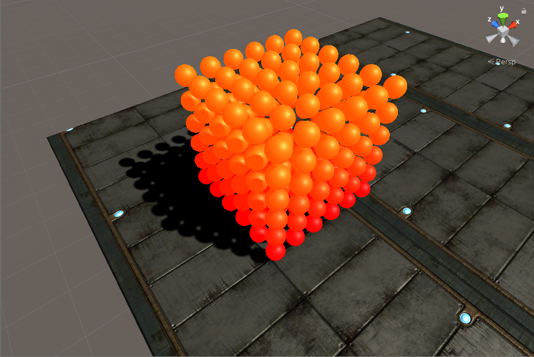
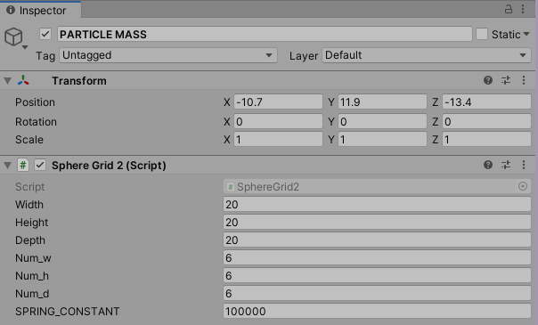
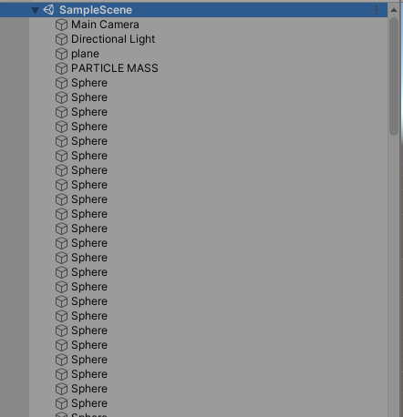
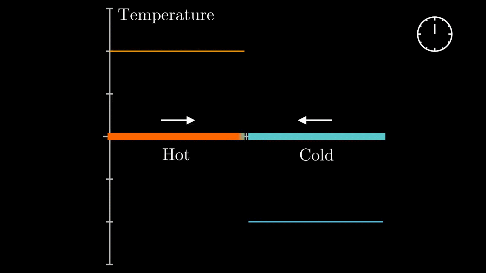

Final Project: Real Time Melting Simulation Using Springs
Michael Ren & Mathew Han, CS184-su20
Abstract
The goal of this project was to create a real time melting simulation in Unity by using spring joints and point masses. The rationale behind our implementation relates to how intermolecular forces act between particles at an atomic level. The spring constant represents the strength of intermolecular forces between particles, and the lattice structure of our cube is similar to the metalic bonds within metals. We can simulate this at a macro level using spring joints and larger point masses.
Technical Approach
For our simulator, we start off by setting up all of the appropriate point masses and constraints required. After that, we can begin running the simulation. At each timestep, the temperature of each point mass and the spring constant of each spring is updated to reflect the propagation of heat throughout the lattice structure.
Pseudocode
The pseudocode below gives an overview of each step of the process:
void Start() { // called once at the beginning of execution
buildStructure(); // initialize the point masses
addStructuralSprings();
addShearingSprings();
assignTemps();
}
void Update() { // called once per timestep
updateTemps();
updateSprings();
vibrateSpheres();
updateColors();
}
In practice, construction of both types of springs was done together. Temperature assignments were
also organized within the initial structure construction for the sake of brevity, although the process
outlined in the pseudocode would definitely work better for the sake of flexibility. The rest
of the code was organized as outlined above, although many of the loops in the
Update() could be combined into one if desired.
Task 1: Constructing the Lattice Structure
The lattice was created by attaching a script to an empty GameObject that generated a
3D array of sphere masses. Each of these sphere masses were given their own Rigidbody
and connected to its (up to 26) neighbors using a one-way spring joint. Unlike Project 4 (ClothSim),
we wanted to simulate a metal rather than a weightless cloth, so we used a high spring constant to
make the cube appear solid and a higher mass per particle.
|

|
One of the biggest issues that we came across while implementing the structure was that the masses were too far apart from each other initially. If we applied too much external force, the box would explode and particles would fly everywhere on the screen. We fixed this by increasing the mass of each particle so that it would take more force to move a spring, as well as decreasing the average distance between each particle.
|  |  |
Some other more trivial issues that arose with our implementation came with how we designed the cube. Initially, we were only going to use structural spring joints, but the cube would simply fall apart. We later added in planar and 3D shearing to address this problem. In addition, Unity has only one way spring joints by default, so we had to apply spring joints for each point mass in one direction, unlike ClothSim where it was done in pairs.
Task 2: Simulating heat propagation
With the construction of the cube done, the next step was to implement heat propagation. In order to do this, we made use of the proportionality given by the heat equation: the rate of temperature change at a point is directly proportional to the how much hotter or cooler the surrounding material at that point is.
In the real heat equation, this proportionality is represented by the Laplacian. For our purposes, we attempted to approximate this temperature delta by computing a weighted average of temperatures out of the point masses directly connected to any given point by springs. This means that our weighted average was computed from (at most) 26 adjacent points masses.
With that in mind, we were still pleasantly surprised by the results:

In the above example, constant heat was applied from the left side of the metal bar throughout the span of the simulation. Notice how initially, the bar is all blue except for the the red block on the left, then the heat gradually spreads across the bar. We also used cubes as our primitive here rather than spherical point masses for better visual results, as we had not implemented melting yet so the shape didn't matter. To color the cubes, we created a lerp based on the temperature of the individual primitive, which was on a scale from 0-100, with 0 corresponding to blue (cold) and 100 correspoinding to red (hot). Initially our lerp was done in RGB values, but the visual results were not aesthetically pleasing. As a result, we switched to the HSV spectrum seen above.
For the next simulation, we attempted to benchmark it by comparing our results to the mathematically generated results from a YouTube video by 3Blue1Brown. The setup we employed was to have a fixed hot and cold point on the left and right respectively. For all the in between points we had the left half start hot, and the right half start cold, but we let them vary freely throughout the simulation. As far as we can tell, this is identical to the setup employed by 3Blue1Brown and our results are very similar. Both simulations can be seen below for comparison:

|
|

|
We ran our simulation for longer than 3Blue1Brown, which explains why we end up with a wider spectrum of colors.
One of the largest problems we encountered was how we wanted to simulate the heat
propagation itself. Initially, we tried energy based radiation using the Stefan-Boltzmann
Law, but we ran into issues with conservation of energy. As the simulation continued running,
the temperatures would increase exponentially until they became NaN. Since we
didn't want to go through the hassle of keeping track of the energy from heat loss and the
energy from heat transfer, we went with the heat equation approach.
Task 3: Applying melting
To implement the melting effect, we used an empirically derived curve from Thermal Degradation of Extension Springs. Since the paper didn't provide an explicit formula for their regression, we approximated it using a cubic spline. The formula would be applied to springs constants of the outgoing spring joints of each particle mass, causing hotter particles to have weaker springs over time. The cube itself would become less structurally stable because of the shift in spring forces, causing the melting effect that we wanted to simulate.
However, the formula only mapped temperature directly to the spring constant of the Elgiloy spring. We transformed the constant into a ratio that could be applied directly onto any spring constant (we assume all of our springs have similar spring constant curve to the Elgiloy spring).
Also, despite lowering the spring constant, the cube itself would be entirely at rest by the time it was heated enough for the formula to have an impact. As a result, we had to apply microforces to each particle (vibrations) in order for the structure to actually melt. Below are some of our initial simulations of the melting.
In the first example, we apply constant heat to the entire bottom layer of point masses. The video below is sped up by five times:
Note that although we get some very pretty results, there is some bouncing in the point masses due to our spring model. This is even more apparent in the next example, in which we start by heating the center "core" of the lattice/metal. This video is also sped up by five times:
In the larger simulation, the lattice is being held together almost unnaturally in addition to the springiness. For our final deliverables, we resolved this by putting tighter restrictions on our spring scaling logic through clamping.
Results
With all the changes made, let's see the results!
Constant heat applied to the bottom left corner: (2x speed)
Constant heat applied to the middle section of the top layer: (real-time)
Video - CS184 Final Project: Real-time Melting Simulator
Contributions
Mathew
I worked on researching different methods of implementing heat propagation, specifically conduction and radiation. I also coded up the spring update algorithm, parts of the construction of the point mass cube itself, and contributed to the reports, video, and final presentation.
Michael
I mainly worked on implementing the heat equation into our simulation model. I researched its logic and physical interpretation, and did a lot of testing to ensure its accuracy. Additionally, I computed the spring scaling curve, and worked on optimizing the initial construction of our spring and point mass lattice I also contributed to parts of the reports, video, and final presentation.
Conclusion
In the end, we are very satisfied with the results of our project. In summary, we were able to implement the following in the past two weeks:
Of course, there are still many improvements which can be made. Some of the things we weren't able to get to in these two weeks included adding more textures, improving the model, optimizing it, and implementing different types of materials. For the latter in particular, this may prove to be difficult as the molecular structure of nonmetals is much more varying than that of metals. However, it is a worthy improvement to think about and pursue.
Finally, as with all of the other projects done in this class, we had a lot of fun completing the final project. We're very grateful to Ben, Cecilia, Vivien, and the entire rest of the course staff for making this one of the most rewarding and well organized courses we've ever taken. Thank you for everything!